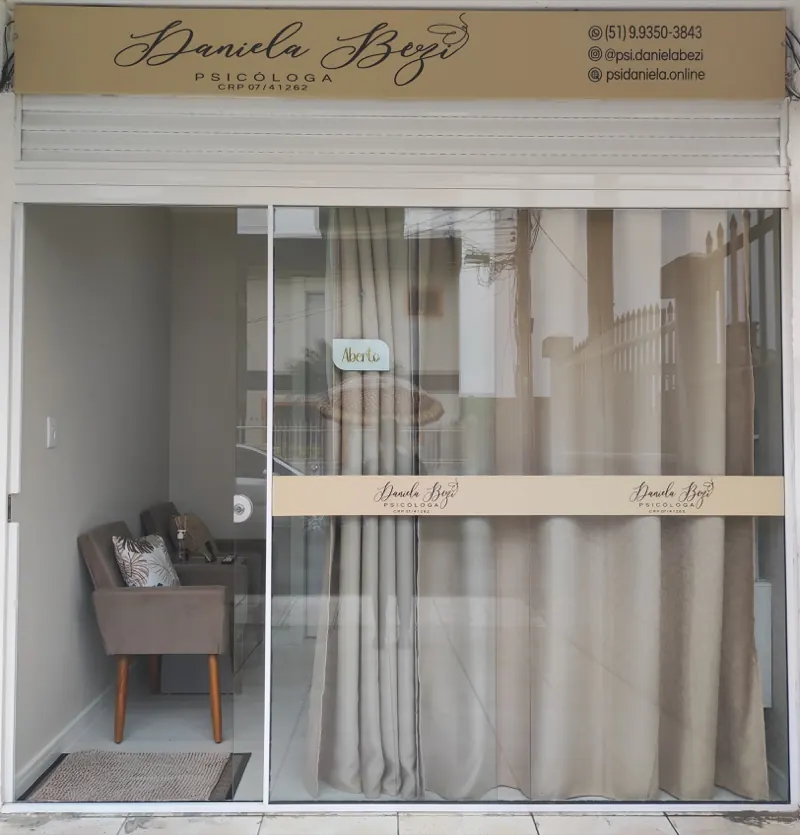

O principal objetivo da psicoterapia é ajudar pacientes com as suas demandas emocionais.
- Carreira profissional
- Relações familiares
- Relacionamento afetivo
- Autoestima
- Depressão
- Ansiedade
- Entre muitos outros
A psicoterapia não muda a sua história...
mas lhe oferece novos olhares sobre ela.
Sobre mim
Me chamo Daniela Saraiva Cardoso Bézi, sou psicóloga clínica, graduada pela Universidade Luterana do Brasil (ULBRA) e pós graduanda em Psicanálise Clínica Avançada, Psicanálise Infantil e Psicopatologia do Adolescente.
Atualmente me dedico exclusivamente à clínica, onde atendo pacientes infantis, adolescentes e adultos com as mais variadas demandas em saúde mental.
Acredito que cada pessoa é única e merece ser tratada com respeito e compreensão.
Compreendo que pode ser difícil compartilhar seus pensamentos e sentimentos, mas estou aqui para ajudá-lo a superar quaisquer desafios que possa estar enfrentando.
Psicoterapia
O principal objetivo da psicoterapia é ajudar pacientes com as suas demandas emocionais.
Pacientes infantis, adolescentes e adultos com as mais variadas demandas em saúde mental.
Sessões
Modalidades
Infantil, adolescente e adulto.
Endereço:
Rua Uiara, nº 20Adolescente e adulto.
O atendimento é feito utilizando o seu smartphone ou computador através de uma videochamada.
Obs.: Casos específicos como depressão grave e ideação suicida, por exemplo, não poderão ser atendidos online.
Atenção! Em ambas modalidades, caso o paciente seja menor de 18 anos é necessário uma autorização expressa dos pais ou responsáveis legais.
O principal objetivo da psicoterapia é ajudar pacientes com as suas demandas emocionais. Essas, por sua vez, são definidas por eles mesmos no início da psicoterapia ou ao longo das consultas.
Um indivíduo pode ter problemas com a carreira profissional, relações familiares, relacionamento afetivo, autoestima, depressão, ansiedade, entre muitos outros.
Na maioria dos casos, não é determinado um período limite para a realização das sessões, pois vai depender de muitos fatores como, o engajamento do paciente e as particularidades de cada quadro.
No geral, se for do desejo do indivíduo, ele pode fazer terapia durante a vida toda. Visto que se trata de um processo muito pautado no autoconhecimento e os benefícios são contínuos.
As sessões de psicoterapia, tanto online como presencial, duram entre 45/50 minutos e são realizadas uma vez por semana.
As psicoterapias online são eficazes e possuem os mesmos resultados das consultas realizadas presencialmente.
O que muda são outros aspectos, como o fato de que não é preciso se deslocar até o consultório, há mais privacidade, comodidade, praticidade e economia para você.
Não! O psicólogo ou psicóloga não é capacitado para receitar medicamentos, essa responsabilidade é do médico psiquiatra.
Contato
Minhas redes sociais
Consultório
Rua Uiara, nº 20